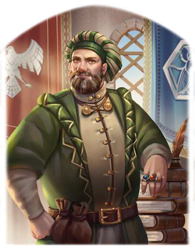

"Ihr seid nicht sicher? Dann schlage ich vor, dass ihr wieder loszieht und es in Erfahrung bringt. Nei Phex, ich plege keine Geschäfte zu machen, ohne mögliche Fallstricke zu kennen."
Der Erbe des stoerrebrandtschen Handelsimperiums, das vor einigen Jahren von Festum nach Gareth umsiedelte, ist mit Abstand der reichste Mann Aventuriens. Auch wenn viele eigentlich noch Emmerans Vater Stover meinen, wenn sie vom Reichtum eines Stoerrebrandts reden, gilt beinahe alles über den Handelsmagnaten Gesagte auch für seinen Sohn. Er ist ein Förderer von Handwerk und Kunst, Lohnherr für unzählige Arbeiter in Lagerhäusern, Manufakturen oder Stellmachereien und er gibt regelmäßig Almosen an Bedürftige und Suppenküchen in der Hauptstadt. Geschäftspartner sollten ihn nicht unterschätzen, denn Emmeran Stoerrebrandt ist ein beinahe gnadenloser Gläubiger. Sein guter Ruf ist sein Kapital, und ein einmal vor Phex vereinbarter Handel gilt. Als Kreditgeber der Reichen und Mächtigen ist sein Einluss nicht zu unterschätzen. Zu seinem Handelsimperium gehören unter anderem ein Botendienst und eine Insel im Südmeer, er hält Anteile an der Nordlandbank und unterhält mit dem Stoerrebrandt-Kolleg sogar eine eigene Magierakademie mit Niederlassungen in Riva und Wagenhalt. Um sich gegenüber Konkurrenten einen Vorsprung zu verschaffen, agiert er häuig als Sponsor für Expeditionen vom hohen Norden bis ins ferne Uthuria, und das Handelshaus hat steten Bedarf an wackeren Helden, die seinen Händlern oder Kundschaftern Schutz bieten.
Volkes Stimme
- "Geh` zu Storrebrandt, der kann dir aushelfen."
- "Geh` nicht zu Stoerrebrandt! Hat er dir ausgeholfen, gehörst du ihm."